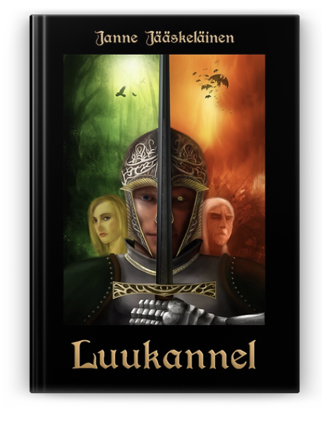

Luukannel
Luukannel kertoo tarinan muinaisesta Suomesta, ajalta jolloin metsien jumalat vielä kävelivät lastensa joukossa.
Nuori petosilmäinen Misha joutuu pakenemaan veriteon vuoksi sukunsa luota, ja sattuma johdattaa hänet lopulta palvelemaan Tapion sotajoukoissa Suomen pääkaupunkiin. Vuosien koulutuksen jälkeen Misha etenee urallaan Miekkamestariksi, ja tapaa viimein hänelle luvatun Mielikin katajaneidon, Pirtan. Kohtalo sotkee nuoret kuitenkin sotaan, joka tuntuu repivän Suomen palasiksi niin sisältä kuin ulkoakin.
Arvioita
Vilpittömän hyvä
Ehjä tarina, helppo lukea, vilpittömän hyvä. Kirja kesti melkein kaksi päivää.
Lumoava
Lumoavan myyttinen kertomus, Kalevala-henkinen, rakastuin, ihastuin kerrontaan sekä unenomaiseen tarinaan.
Suosittelen luettavaksi
Jännittävä ja mukaansa tempaava tarina. Tälle odottaisi saavansa jatkoa!
 Kirjoittajasta
Kirjoittajasta